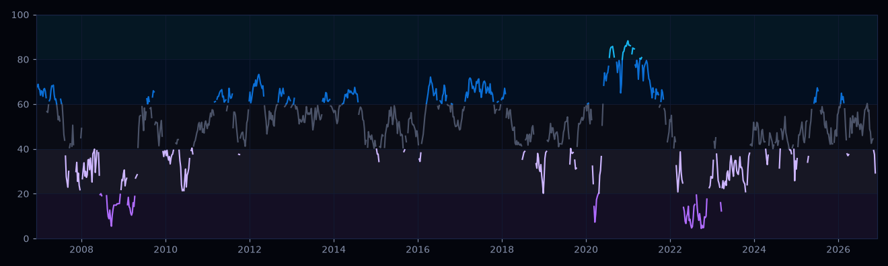
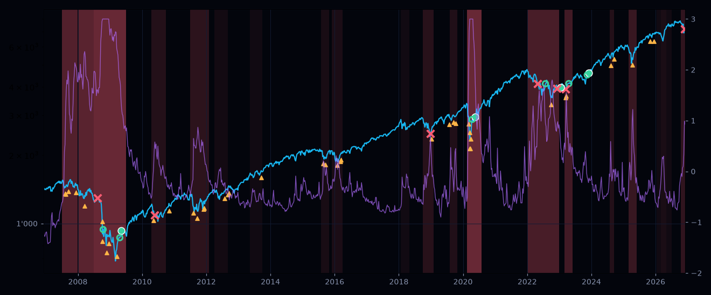

GLSI · REGIME GAUGE · LIVE
Score = 100 × Φ(½·Liquidità − ½·Stress) · scala 0–100
Mercoledì 25, ultima seduta piena prima del Ringraziamento (oggi Wall Street è chiusa), l'S&P 500 ha perso lo 0,25% a 7.183 punti e il Nasdaq lo 0,6%, con volumi bassi e la tecnologia ancora sotto pressione per le vendite sui titoli legati all'intelligenza artificiale. Il VIX è risalito sopra 28. Il GLSI è a 20,1, in fascia Stretta (20-40) e a solo 0,1 punti dalla fascia Siccità: lo score ha perso 24,4 punti in 4 settimane. Il segnale SHORT / riduzione rischio è attivo dal 25 novembre; nessun segnale long.
L'umore resta teso: secondo calo consecutivo per l'S&P 500 e Nasdaq circa 14,5% sotto il massimo del 6 ottobre, mentre i soldi si spostano verso settori difensivi come la sanità. Nei dati del cruscotto il VIX è 26,4 e lo spread high yield 3,72% (dati del 24 novembre), con lo stress composito a +0,92, ben oltre la soglia di +0,5 del segnale short. I mercati riaprono venerdì per una seduta che di norma è breve e con pochi scambi, quindi i movimenti possono essere ampi. Basta un piccolo peggioramento perché lo score scenda sotto 20, entrando in Siccità: è l'allerta che storicamente precede gli ingressi long, ma non è ancora un ingresso.
Il fattore del mese è la Fed: i mercati di previsione assegnano oltre il 90% di probabilità a un rialzo di 25 punti base alla riunione di dicembre, dopo un'inflazione più alta del previsto. Il dollaro forte pesa molto sullo score (componente dollaro z -1,56) e la liquidità netta globale è scesa dello 0,3% in 4 settimane, del 2,6% in 13 e del 5,6% in un anno. Non ho trovato notizie aggiornate su BCE, petrolio e dollaro degli ultimi giorni, quindi su questi punti mi baso solo sui dati del cruscotto. Il precedente più simile è marzo 2022: con la Fed che continuava a stringere, lo score è rimasto basso e i rimbalzi si sono spenti in poche settimane (S&P -7,2% a 3 mesi).
I cinque precedenti più simili danno esiti molto diversi a 12 mesi: +27,0% dopo marzo 2023 (SVB) e +22,2% dopo maggio 2010 (debito greco), ma -8,2% dopo marzo 2022, -14,5% dopo settembre 2007 e -28,1% dopo giugno 2008. Nelle 58 settimane con score simile dal 2003 l'S&P a 12 mesi ha fatto in media +14,3% (74% positivi), poco diverso dalla media generale (+10,2%). Il segnale short ha funzionato bene fino al 2014 (media a 3 mesi -23,8%), molto meno dal 2015 (+1,1%). La differenza l'ha fatta quasi sempre la banca centrale: quando è intervenuta con liquidità l'anno dopo è stato buono, quando ha continuato a stringere no. Oggi la Fed sta stringendo, quindi l'incertezza è alta.
1) Il segnale short va letto come invito a ridurre il rischio o coprirsi, non a vendere allo scoperto a piena forza: nelle 42 settimane storiche in questo stato l'S&P a 3 mesi è stato positivo nel 43% dei casi, con calo massimo medio a 6 mesi del 12,2%; agosto 2008 fu un crollo, dicembre 2018 e marzo 2023 erano vicini ai minimi. 2) Se lo score va sotto 20 scatta l'allerta: in passato è stata seguita da cali ulteriori (in media -15,1% nei 6 mesi) ma anche da buoni 12 mesi (+15,9% medio, 83% positivi). Il segnale più affidabile è il long anticipato, cioè la risalita di almeno 8 punti in 4 settimane dopo essere scesi sotto 20: +27,2% medio a 12 mesi, positivo in tutti i 6 casi. 3) Da osservare nei prossimi giorni: lo spread high yield (se sale verso il 4%, come nell'aprile 2025, il credito conferma lo stress), il VIX sopra 30, i dati settimanali NFCI e St. Louis Fed, e qualsiasi segnale di cambio di tono della Fed prima della riunione di dicembre. Sono considerazioni basate sui dati storici, non consulenza finanziaria.
| Settimana | Episodio | GLSI | Liquidità z | Stress z | S&P +1m | +3m | +12m | Calo max 3m |
|---|
| Variazione score 1 settimana | … |
|---|---|
| Variazione score 4 settimane | … |
| Variazione score 13 settimane | … |
| Percentile storico dello score | … |
| Liquidità netta globale (Fed netta + BCE + BoJ) | … |
| …variazione 4 / 13 / 52 settimane | … |
Regole derivate dallo storico del GLSI dal 2003. Si aggiornano a ogni nuovo dato.
| Segnale | Regola | Casi | S&P +3m | S&P +6m | S&P +12m | Drawdown medio 6m |
|---|
| Data | Segnale | GLSI | S&P | +3m | +6m | +12m | Drawdown 6m |
|---|
Ogni nuovo alert apre anche una issue nel repository GitHub: arriva come notifica e-mail di GitHub. Se configurati, partono anche Telegram ed e-mail diretta (vedi README).
z-score su 10 anni. Liquidità: positivo = più liquidità. Stress: positivo = più stress.

Fasce rosse: episodi di stress (intensità = picco dello stress). Triangoli: interventi di banche centrali e governi. Cerchi verdi: segnali long; croci rosse: ingressi short. Linea viola: stress composito (asse destro). Clicca una riga della tabella per zoomare.

| Episodio | Finestra | Picco stress | z stress | GLSI min | STLFSI max | NFCI max | VIX max | HY max % | S&P al picco | Drawdown S&P | +3m | +6m | +12m | Interventi successivi |
|---|
Livelli, date di picco e rendimenti sono calcolati dai dati settimanali. I nomi e gli interventi vengono da un catalogo curato (config/events.json). Rendimenti S&P misurati dalla settimana di picco dello stress; drawdown dal massimo delle 26 settimane precedenti al minimo dell'episodio.
Ultimo dato pubblicato di ogni serie. Aggiornamento automatico ogni 3 ore.
| Serie | Fonte | Ultimo dato | Valore | Unità |
|---|